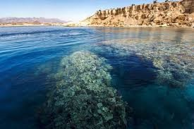

<!DOCTYPE html>
<html>
<head>
    
    <meta http-equiv="content-type" content="text/html; charset=UTF-8" />
    
        <script>
            L_NO_TOUCH = false;
            L_DISABLE_3D = false;
        </script>
    
    <style>html, body {width: 100%;height: 100%;margin: 0;padding: 0;}</style>
    <style>#map {position:absolute;top:0;bottom:0;right:0;left:0;}</style>
    <script src="https://cdn.jsdelivr.net/npm/leaflet@1.9.3/dist/leaflet.js"></script>
    <script src="https://code.jquery.com/jquery-3.7.1.min.js"></script>
    <script src="https://cdn.jsdelivr.net/npm/bootstrap@5.2.2/dist/js/bootstrap.bundle.min.js"></script>
    <script src="https://cdnjs.cloudflare.com/ajax/libs/Leaflet.awesome-markers/2.0.2/leaflet.awesome-markers.js"></script>
    <link rel="stylesheet" href="https://cdn.jsdelivr.net/npm/leaflet@1.9.3/dist/leaflet.css"/>
    <link rel="stylesheet" href="https://cdn.jsdelivr.net/npm/bootstrap@5.2.2/dist/css/bootstrap.min.css"/>
    <link rel="stylesheet" href="https://netdna.bootstrapcdn.com/bootstrap/3.0.0/css/bootstrap.min.css"/>
    <link rel="stylesheet" href="https://cdn.jsdelivr.net/npm/@fortawesome/fontawesome-free@6.2.0/css/all.min.css"/>
    <link rel="stylesheet" href="https://cdnjs.cloudflare.com/ajax/libs/Leaflet.awesome-markers/2.0.2/leaflet.awesome-markers.css"/>
    <link rel="stylesheet" href="https://cdn.jsdelivr.net/gh/python-visualization/folium/folium/templates/leaflet.awesome.rotate.min.css"/>
    
            <meta name="viewport" content="width=device-width,
                initial-scale=1.0, maximum-scale=1.0, user-scalable=no" />
            <style>
                #map_1520eb94586a93a1a8db2ec1d1e4f8bd {
                    position: relative;
                    width: 100.0%;
                    height: 100.0%;
                    left: 0.0%;
                    top: 0.0%;
                }
                .leaflet-container { font-size: 1rem; }
            </style>
        
</head>
<body>
    
    
            <div class="folium-map" id="map_1520eb94586a93a1a8db2ec1d1e4f8bd" ></div>
        
</body>
<script>
    
    
            var map_1520eb94586a93a1a8db2ec1d1e4f8bd = L.map(
                "map_1520eb94586a93a1a8db2ec1d1e4f8bd",
                {
                    center: [31.4165, 31.8133],
                    crs: L.CRS.EPSG3857,
                    zoom: 6,
                    zoomControl: true,
                    preferCanvas: false,
                }
            );

            

        
    
            var tile_layer_f118c2bb5409f1b82eac2ce2772ab17d = L.tileLayer(
                "https://tile.openstreetmap.org/{z}/{x}/{y}.png",
                {"attribution": "\u0026copy; \u003ca href=\"https://www.openstreetmap.org/copyright\"\u003eOpenStreetMap\u003c/a\u003e contributors", "detectRetina": false, "maxNativeZoom": 19, "maxZoom": 19, "minZoom": 0, "noWrap": false, "opacity": 1, "subdomains": "abc", "tms": false}
            );
        
    
            tile_layer_f118c2bb5409f1b82eac2ce2772ab17d.addTo(map_1520eb94586a93a1a8db2ec1d1e4f8bd);
        
    
            var marker_88615c54a1c6275ec032afccf854f865 = L.marker(
                [31.4165, 31.8133],
                {}
            ).addTo(map_1520eb94586a93a1a8db2ec1d1e4f8bd);
        
    
            var icon_2715ffe289434eac7dbd282206261587 = L.AwesomeMarkers.icon(
                {"extraClasses": "fa-rotate-0", "icon": "info-sign", "iconColor": "white", "markerColor": "green", "prefix": "glyphicon"}
            );
            marker_88615c54a1c6275ec032afccf854f865.setIcon(icon_2715ffe289434eac7dbd282206261587);
        
    
        var popup_e6c13d7d6c389d0b1bb16292bfb39e60 = L.popup({"maxWidth": "100%"});

        
            
                var html_1b3dc9d4e6df31715444a3bdcbb3791f = $(`<div id="html_1b3dc9d4e6df31715444a3bdcbb3791f" style="width: 100.0%; height: 100.0%;">My Current Location</div>`)[0];
                popup_e6c13d7d6c389d0b1bb16292bfb39e60.setContent(html_1b3dc9d4e6df31715444a3bdcbb3791f);
            
        

        marker_88615c54a1c6275ec032afccf854f865.bindPopup(popup_e6c13d7d6c389d0b1bb16292bfb39e60)
        ;

        
    
    
            var marker_b52b6eb013e4c0908519d3984ff597eb = L.marker(
                [29.9792, 31.1342],
                {}
            ).addTo(map_1520eb94586a93a1a8db2ec1d1e4f8bd);
        
    
        var popup_9af1803982b04eead753c7ca24b047b3 = L.popup({"maxWidth": "100%"});

        
            
                var html_5d8d8ab5144fae6bafc1229836fbf6ef = $(`<div id="html_5d8d8ab5144fae6bafc1229836fbf6ef" style="width: 100.0%; height: 100.0%;"><br>Pyramids<br>Distance: 172.11 km</div>`)[0];
                popup_9af1803982b04eead753c7ca24b047b3.setContent(html_5d8d8ab5144fae6bafc1229836fbf6ef);
            
        

        marker_b52b6eb013e4c0908519d3984ff597eb.bindPopup(popup_9af1803982b04eead753c7ca24b047b3)
        ;

        
    
    
            var marker_208622a7e74e5e30b31fb72eb6f11798 = L.marker(
                [25.7188, 32.6573],
                {}
            ).addTo(map_1520eb94586a93a1a8db2ec1d1e4f8bd);
        
    
        var popup_a19729e361a0199f91719da163a7242c = L.popup({"maxWidth": "100%"});

        
            
                var html_c9921e99aabb284b773a15defd31c9bd = $(`<div id="html_c9921e99aabb284b773a15defd31c9bd" style="width: 100.0%; height: 100.0%;"><br>Karnak Temple<br>Distance: 636.84 km</div>`)[0];
                popup_a19729e361a0199f91719da163a7242c.setContent(html_c9921e99aabb284b773a15defd31c9bd);
            
        

        marker_208622a7e74e5e30b31fb72eb6f11798.bindPopup(popup_a19729e361a0199f91719da163a7242c)
        ;

        
    
    
            var marker_d07f1da643bc79af01e9ad0d48dd7f8c = L.marker(
                [29.3084, 30.8438],
                {}
            ).addTo(map_1520eb94586a93a1a8db2ec1d1e4f8bd);
        
    
        var popup_cff6564b1c4594495c4e69e9b7784b30 = L.popup({"maxWidth": "100%"});

        
            
                var html_d2e370f690b7f32f9fa44c77b839d32c = $(`<div id="html_d2e370f690b7f32f9fa44c77b839d32c" style="width: 100.0%; height: 100.0%;"><br>Fayoum Oasis<br>Distance: 251.60 km</div>`)[0];
                popup_cff6564b1c4594495c4e69e9b7784b30.setContent(html_d2e370f690b7f32f9fa44c77b839d32c);
            
        

        marker_d07f1da643bc79af01e9ad0d48dd7f8c.bindPopup(popup_cff6564b1c4594495c4e69e9b7784b30)
        ;

        
    
    
            var marker_a0b3034f61a0eca4ee15f0f5b9f56ef0 = L.marker(
                [28.5392, 33.9754],
                {}
            ).addTo(map_1520eb94586a93a1a8db2ec1d1e4f8bd);
        
    
        var popup_72a11329e557f0d8ceda334d2cedaa11 = L.popup({"maxWidth": "100%"});

        
            
                var html_7b10521e24654771a4a3117bfeb239bb = $(`<div id="html_7b10521e24654771a4a3117bfeb239bb" style="width: 100.0%; height: 100.0%;"><br>Mount Sinai<br>Distance: 381.12 km</div>`)[0];
                popup_72a11329e557f0d8ceda334d2cedaa11.setContent(html_7b10521e24654771a4a3117bfeb239bb);
            
        

        marker_a0b3034f61a0eca4ee15f0f5b9f56ef0.bindPopup(popup_72a11329e557f0d8ceda334d2cedaa11)
        ;

        
    
    
            var marker_7e49a2fc2c5f4cb936014cea0c466ffc = L.marker(
                [30.0331, 31.2244],
                {}
            ).addTo(map_1520eb94586a93a1a8db2ec1d1e4f8bd);
        
    
        var popup_98190ea75967df7b912797449c2697a3 = L.popup({"maxWidth": "100%"});

        
            
                var html_c4accfb9c73faeca4cf98ed44aa8a350 = $(`<div id="html_c4accfb9c73faeca4cf98ed44aa8a350" style="width: 100.0%; height: 100.0%;"><br>Wax Museum<br>Distance: 163.41 km</div>`)[0];
                popup_98190ea75967df7b912797449c2697a3.setContent(html_c4accfb9c73faeca4cf98ed44aa8a350);
            
        

        marker_7e49a2fc2c5f4cb936014cea0c466ffc.bindPopup(popup_98190ea75967df7b912797449c2697a3)
        ;

        
    
    
            var marker_d282e9090968df5d216d681ddd239aca = L.marker(
                [30.0596, 31.2001],
                {}
            ).addTo(map_1520eb94586a93a1a8db2ec1d1e4f8bd);
        
    
        var popup_de4ec46707184b6c00eb566cb621901f = L.popup({"maxWidth": "100%"});

        
            
                var html_fd45323826104e76264887153e585730 = $(`<div id="html_fd45323826104e76264887153e585730" style="width: 100.0%; height: 100.0%;"><br>Louvre Museum<br>Distance: 161.49 km</div>`)[0];
                popup_de4ec46707184b6c00eb566cb621901f.setContent(html_fd45323826104e76264887153e585730);
            
        

        marker_d282e9090968df5d216d681ddd239aca.bindPopup(popup_de4ec46707184b6c00eb566cb621901f)
        ;

        
    
    
            var marker_5cf7ea1284cd5e83fdcb899b69bc6271 = L.marker(
                [25.6872, 32.6396],
                {}
            ).addTo(map_1520eb94586a93a1a8db2ec1d1e4f8bd);
        
    
        var popup_a04d245e0c61e52bc94dd692ac22e0a2 = L.popup({"maxWidth": "100%"});

        
            
                var html_6b8ffa43ff5bcf540c372d736859bd1d = $(`<div id="html_6b8ffa43ff5bcf540c372d736859bd1d" style="width: 100.0%; height: 100.0%;"><br>Luxor City<br>Distance: 640.09 km</div>`)[0];
                popup_a04d245e0c61e52bc94dd692ac22e0a2.setContent(html_6b8ffa43ff5bcf540c372d736859bd1d);
            
        

        marker_5cf7ea1284cd5e83fdcb899b69bc6271.bindPopup(popup_a04d245e0c61e52bc94dd692ac22e0a2)
        ;

        
    
    
            var marker_59db0e3babf8015f7fdf850132e473b2 = L.marker(
                [30.0478, 31.2336],
                {}
            ).addTo(map_1520eb94586a93a1a8db2ec1d1e4f8bd);
        
    
        var popup_b2efe2d2b92bb1383e9a301f2ca6302e = L.popup({"maxWidth": "100%"});

        
            
                var html_fe6723b64f81a290cdbd9a1870bd5344 = $(`<div id="html_fe6723b64f81a290cdbd9a1870bd5344" style="width: 100.0%; height: 100.0%;"><br>Egyptian Museum<br>Distance: 161.58 km</div>`)[0];
                popup_b2efe2d2b92bb1383e9a301f2ca6302e.setContent(html_fe6723b64f81a290cdbd9a1870bd5344);
            
        

        marker_59db0e3babf8015f7fdf850132e473b2.bindPopup(popup_b2efe2d2b92bb1383e9a301f2ca6302e)
        ;

        
    
    
            var marker_ccc192d46b8e1e391e1523cbeed0a82e = L.marker(
                [30.0299, 31.2613],
                {}
            ).addTo(map_1520eb94586a93a1a8db2ec1d1e4f8bd);
        
    
        var popup_a68b41fc068052e15d08f16678384254 = L.popup({"maxWidth": "100%"});

        
            
                var html_4f51bfc0fe068fce99d76e84314beb05 = $(`<div id="html_4f51bfc0fe068fce99d76e84314beb05" style="width: 100.0%; height: 100.0%;"><br>Citadel of Salah El-Din<br>Distance: 162.56 km</div>`)[0];
                popup_a68b41fc068052e15d08f16678384254.setContent(html_4f51bfc0fe068fce99d76e84314beb05);
            
        

        marker_ccc192d46b8e1e391e1523cbeed0a82e.bindPopup(popup_a68b41fc068052e15d08f16678384254)
        ;

        
    
    
            var marker_1b1b3e19083a111146c3a25bbf493c4e = L.marker(
                [24.024, 32.8844],
                {}
            ).addTo(map_1520eb94586a93a1a8db2ec1d1e4f8bd);
        
    
        var popup_e0ded8a2908d0e2b12968711dcdfeeed = L.popup({"maxWidth": "100%"});

        
            
                var html_dced87bb8db8a83ec0e75a0be77f5a24 = $(`<div id="html_dced87bb8db8a83ec0e75a0be77f5a24" style="width: 100.0%; height: 100.0%;"><br>Philae Temple<br>Distance: 825.97 km</div>`)[0];
                popup_e0ded8a2908d0e2b12968711dcdfeeed.setContent(html_dced87bb8db8a83ec0e75a0be77f5a24);
            
        

        marker_1b1b3e19083a111146c3a25bbf493c4e.bindPopup(popup_e0ded8a2908d0e2b12968711dcdfeeed)
        ;

        
    
    
            var marker_df67a1f99b71abefd805afad20986ae6 = L.marker(
                [22.3372, 31.6258],
                {}
            ).addTo(map_1520eb94586a93a1a8db2ec1d1e4f8bd);
        
    
        var popup_69ccba831630f2eb2ffcab1179d0eab1 = L.popup({"maxWidth": "100%"});

        
            
                var html_8133267e86d58d84142456759698a6ed = $(`<div id="html_8133267e86d58d84142456759698a6ed" style="width: 100.0%; height: 100.0%;"><br>Abu Simbel Temples<br>Distance: 1006.19 km</div>`)[0];
                popup_69ccba831630f2eb2ffcab1179d0eab1.setContent(html_8133267e86d58d84142456759698a6ed);
            
        

        marker_df67a1f99b71abefd805afad20986ae6.bindPopup(popup_69ccba831630f2eb2ffcab1179d0eab1)
        ;

        
    
    
            var marker_adc41eb4fd4691fdbbd3e2330fd359d3 = L.marker(
                [31.2089, 29.9092],
                {}
            ).addTo(map_1520eb94586a93a1a8db2ec1d1e4f8bd);
        
    
        var popup_833e4b25a64379a6964ae1abe489605e = L.popup({"maxWidth": "100%"});

        
            
                var html_35b5cdd7c9081349e49aee4ed3d28869 = $(`<div id="html_35b5cdd7c9081349e49aee4ed3d28869" style="width: 100.0%; height: 100.0%;"><br>Alexandria Library<br>Distance: 182.71 km</div>`)[0];
                popup_833e4b25a64379a6964ae1abe489605e.setContent(html_35b5cdd7c9081349e49aee4ed3d28869);
            
        

        marker_adc41eb4fd4691fdbbd3e2330fd359d3.bindPopup(popup_833e4b25a64379a6964ae1abe489605e)
        ;

        
    
    
            var marker_8dde8ff9e578dbf865825e3ebd2f8763 = L.marker(
                [31.2865, 30.0205],
                {}
            ).addTo(map_1520eb94586a93a1a8db2ec1d1e4f8bd);
        
    
        var popup_4d9094be201f94420f23b6d9ff9bd09a = L.popup({"maxWidth": "100%"});

        
            
                var html_8ad7dc929d8b1386bb64337341e8b5bc = $(`<div id="html_8ad7dc929d8b1386bb64337341e8b5bc" style="width: 100.0%; height: 100.0%;"><br>Montaza Palace<br>Distance: 171.19 km</div>`)[0];
                popup_4d9094be201f94420f23b6d9ff9bd09a.setContent(html_8ad7dc929d8b1386bb64337341e8b5bc);
            
        

        marker_8dde8ff9e578dbf865825e3ebd2f8763.bindPopup(popup_4d9094be201f94420f23b6d9ff9bd09a)
        ;

        
    
    
            var marker_e641be354b5bebd32dedf38213fa3afb = L.marker(
                [29.2041, 25.5193],
                {}
            ).addTo(map_1520eb94586a93a1a8db2ec1d1e4f8bd);
        
    
        var popup_a3f51e7e52ad915d4a7b7a28b3716969 = L.popup({"maxWidth": "100%"});

        
            
                var html_8b7c5115f5afd17ef40e321a88119048 = $(`<div id="html_8b7c5115f5afd17ef40e321a88119048" style="width: 100.0%; height: 100.0%;"><br>Siwa Oasis<br>Distance: 653.04 km</div>`)[0];
                popup_a3f51e7e52ad915d4a7b7a28b3716969.setContent(html_8b7c5115f5afd17ef40e321a88119048);
            
        

        marker_e641be354b5bebd32dedf38213fa3afb.bindPopup(popup_a3f51e7e52ad915d4a7b7a28b3716969)
        ;

        
    
    
            var marker_6e03059e59119dc604da1ea3aae6c235 = L.marker(
                [28.5095, 34.5136],
                {}
            ).addTo(map_1520eb94586a93a1a8db2ec1d1e4f8bd);
        
    
        var popup_fef81fb0308d35249f8ac1997f9691d6 = L.popup({"maxWidth": "100%"});

        
            
                var html_cb2097e1deb7a76007af4a3d2dc978dd = $(`<div id="html_cb2097e1deb7a76007af4a3d2dc978dd" style="width: 100.0%; height: 100.0%;"><br>Dahab<br>Distance: 414.42 km</div>`)[0];
                popup_fef81fb0308d35249f8ac1997f9691d6.setContent(html_cb2097e1deb7a76007af4a3d2dc978dd);
            
        

        marker_6e03059e59119dc604da1ea3aae6c235.bindPopup(popup_fef81fb0308d35249f8ac1997f9691d6)
        ;

        
    
    
            var marker_9d0251b28969800db50f53580a124ad0 = L.marker(
                [27.9158, 34.3299],
                {}
            ).addTo(map_1520eb94586a93a1a8db2ec1d1e4f8bd);
        
    
        var popup_156317e9a39a7cabf00b14ec1927a729 = L.popup({"maxWidth": "100%"});

        
            
                var html_755e5cd3ffe34e122e701a7de6f8f704 = $(`<div id="html_755e5cd3ffe34e122e701a7de6f8f704" style="width: 100.0%; height: 100.0%;"><br>Sharm El Sheikh<br>Distance: 458.14 km</div>`)[0];
                popup_156317e9a39a7cabf00b14ec1927a729.setContent(html_755e5cd3ffe34e122e701a7de6f8f704);
            
        

        marker_9d0251b28969800db50f53580a124ad0.bindPopup(popup_156317e9a39a7cabf00b14ec1927a729)
        ;

        
    
    
            var marker_a6dd662581299ca9f50dd431043951d9 = L.marker(
                [27.2579, 33.8116],
                {}
            ).addTo(map_1520eb94586a93a1a8db2ec1d1e4f8bd);
        
    
        var popup_655e26b0170504b2025a771ac0f7b2a7 = L.popup({"maxWidth": "100%"});

        
            
                var html_1a82f41e01189a49a0e05a15cff11220 = $(`<div id="html_1a82f41e01189a49a0e05a15cff11220" style="width: 100.0%; height: 100.0%;"><br>Hurghada<br>Distance: 500.10 km</div>`)[0];
                popup_655e26b0170504b2025a771ac0f7b2a7.setContent(html_1a82f41e01189a49a0e05a15cff11220);
            
        

        marker_a6dd662581299ca9f50dd431043951d9.bindPopup(popup_655e26b0170504b2025a771ac0f7b2a7)
        ;

        
    
    
            var marker_e0226eb6d6112fd4501bd2c123888134 = L.marker(
                [25.7376, 32.6066],
                {}
            ).addTo(map_1520eb94586a93a1a8db2ec1d1e4f8bd);
        
    
        var popup_6f8ab74548d6e0f5508f52f1a4ba0902 = L.popup({"maxWidth": "100%"});

        
            
                var html_3a89b2f8bd76bdd4d337274ebaa50440 = $(`<div id="html_3a89b2f8bd76bdd4d337274ebaa50440" style="width: 100.0%; height: 100.0%;"><br>Temple of Hatshepsut<br>Distance: 634.15 km</div>`)[0];
                popup_6f8ab74548d6e0f5508f52f1a4ba0902.setContent(html_3a89b2f8bd76bdd4d337274ebaa50440);
            
        

        marker_e0226eb6d6112fd4501bd2c123888134.bindPopup(popup_6f8ab74548d6e0f5508f52f1a4ba0902)
        ;

        
    
    
            var marker_40373f167cc19aac83cc51c9924c47df = L.marker(
                [25.7402, 32.6014],
                {}
            ).addTo(map_1520eb94586a93a1a8db2ec1d1e4f8bd);
        
    
        var popup_1c1ba839b138b60383fb54205cecbed9 = L.popup({"maxWidth": "100%"});

        
            
                var html_ebe9ddb5f055812c561f381001179499 = $(`<div id="html_ebe9ddb5f055812c561f381001179499" style="width: 100.0%; height: 100.0%;"><br>Valley of the Kings<br>Distance: 633.80 km</div>`)[0];
                popup_1c1ba839b138b60383fb54205cecbed9.setContent(html_ebe9ddb5f055812c561f381001179499);
            
        

        marker_40373f167cc19aac83cc51c9924c47df.bindPopup(popup_1c1ba839b138b60383fb54205cecbed9)
        ;

        
    
    
            var marker_6ff30cd6d631c7de1027b537abe44ecc = L.marker(
                [24.0871, 32.8989],
                {}
            ).addTo(map_1520eb94586a93a1a8db2ec1d1e4f8bd);
        
    
        var popup_d1927f89a9f1104c7065a8a4b185937f = L.popup({"maxWidth": "100%"});

        
            
                var html_d98a52cd397e049485ca7f1cdb4f960a = $(`<div id="html_d98a52cd397e049485ca7f1cdb4f960a" style="width: 100.0%; height: 100.0%;"><br>Nubian Museum<br>Distance: 819.22 km</div>`)[0];
                popup_d1927f89a9f1104c7065a8a4b185937f.setContent(html_d98a52cd397e049485ca7f1cdb4f960a);
            
        

        marker_6ff30cd6d631c7de1027b537abe44ecc.bindPopup(popup_d1927f89a9f1104c7065a8a4b185937f)
        ;

        
    
    
            var marker_4e4277937eb0704010fe3b49d59cde19 = L.marker(
                [27.2236, 28.1538],
                {}
            ).addTo(map_1520eb94586a93a1a8db2ec1d1e4f8bd);
        
    
        var popup_8cf293a4de4313e04bd63933ef940901 = L.popup({"maxWidth": "100%"});

        
            
                var html_3e95b937a81ee8aebab8693d108f9251 = $(`<div id="html_3e95b937a81ee8aebab8693d108f9251" style="width: 100.0%; height: 100.0%;"><br>White Desert<br>Distance: 585.01 km</div>`)[0];
                popup_8cf293a4de4313e04bd63933ef940901.setContent(html_3e95b937a81ee8aebab8693d108f9251);
            
        

        marker_4e4277937eb0704010fe3b49d59cde19.bindPopup(popup_8cf293a4de4313e04bd63933ef940901)
        ;

        
    
    
            var marker_e34de20a04be7fe57b9804cf4379a23c = L.marker(
                [28.5558, 33.976],
                {}
            ).addTo(map_1520eb94586a93a1a8db2ec1d1e4f8bd);
        
    
        var popup_410de1de8796b775b89724426858d529 = L.popup({"maxWidth": "100%"});

        
            
                var html_f8af4c2a0e438a34a3d7fb02032f67a5 = $(`<div id="html_f8af4c2a0e438a34a3d7fb02032f67a5" style="width: 100.0%; height: 100.0%;"><br>Saint Catherine's Monastery<br>Distance: 379.60 km</div>`)[0];
                popup_410de1de8796b775b89724426858d529.setContent(html_f8af4c2a0e438a34a3d7fb02032f67a5);
            
        

        marker_e34de20a04be7fe57b9804cf4379a23c.bindPopup(popup_410de1de8796b775b89724426858d529)
        ;

        
    
</script>
</html>